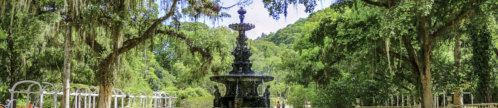

Bem-vindo
O Instituto de Pesquisas Jardim Botânico do Rio de Janeiro é uma das mais belas e bem preservadas áreas da cidade. É um exemplo de diversidade da flora brasileira e estrangeira. Nele podem ser observadas cerca de 6.500 espécies (algumas ameaçãdas de extinção), distribuídas por uma área de 54 hectares, ao ar livre e em estufas. A instituição é responsável pela coordenação da Lista de Espécies da Flora do Brasil e pela avaliação de risco de extinção destas espécies.
A intituição abriga, ainda monumentos de valor histórico, artístico e arqueológico e a mais completa biblioteca do pais especializada em botânica, com mais de 32.000 volumes e o maior herbário do Brasil, que possui 600 mil amostras desidratadas (número de 2014, com uma média de 20 mil novas amostras incorporadas anualmente[3]) completamente informatizadas e disponível para o publico na pagina da instituição.
O Jardim Botânico do Rio de Janeiro é aberto à visitação pública em horário restrito de funcionamento e mediante cobrança de taxa. O espaço pode ser explorado através de mapa informativo que contém os roteiros delimitados por "Aleias", ou invés de ruas, pois os caminhos são ladeados de árvores. Além do "Guia de Visitação" adquirido no Centro de Visitantes, há também guias credenciados para se fazer o passeio.
Em ponto central no encontro das aléias, constitui-se numa das mais belas atrações do jardim. Fabricado na Inglaterra, é constituído por duas bacias. Na maior delas, quatro figuras representam a música, a poesia, a ciência e a arte. O chafariz foi originalmente instalado na Lapa até que, com a reformulação do Passeio público (1905), foi instalado no jardim.
Galeria